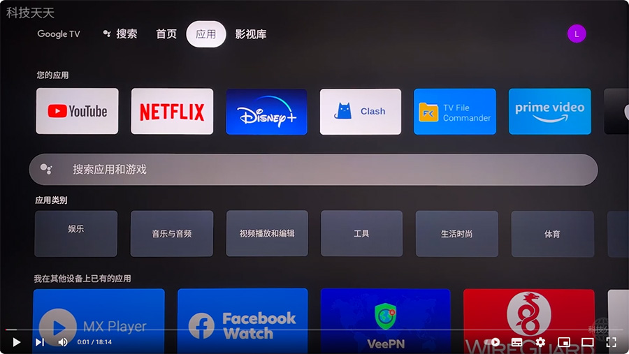

Google TV 科学上网方法： https://kxsw.gitbook.io/tv/
我使用的机场：https://www.kejifx.top
*以上网址请先开代理，再打开。
在Google TV 上安装Clash APP 实现科学上网，不需要软路由也能正常使用。
步骤：
1、先下载代理App，v2rayNG、Clash等等都可以
2、将下载的 APK文件通过电脑或手机传到 Google TV
3、在 Google TV 安装 v2rayNG或Clash
4、打开代理APP，添加订阅节点
5、选择节点，开启代理即可
